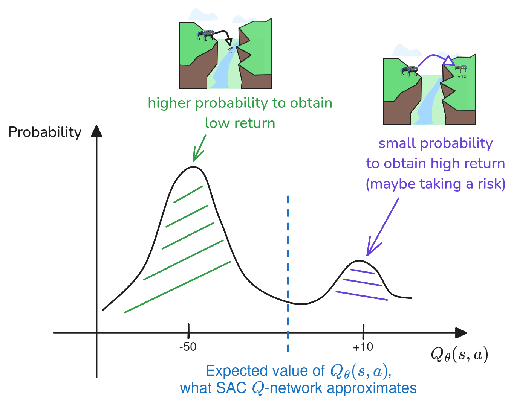
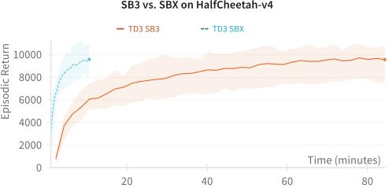

Recent Advances in RL for Continuous Control
Early 2026 update | Model free RL
RL 101


Two lines of improvements

Sample efficiency*
Ex: real robot, slow simulation

Speed
Ex: fast simulation on GPU, slow algorithm
Outline
- RL 103 (from DQN to SAC)
- Improving Sample-Efficiency
- Faster Training
From DQN to SAC (in 10 minutes)
From Tabular Q-Learning to Deep Q-Learning (DQN) https://araffin.github.io/post/rl102/

From Deep Q-Learning (DQN) to Soft Actor-Critic (SAC) and Beyond https://araffin.github.io/post/rl103/
Deep Q-Network (DQN)

Mnih, Volodymyr, et al. "Playing atari with deep reinforcement learning." (2013).
RL Objective
Maximize the sum of discounted reward
Action-Value Function: $Q$-Value
How good is it to take action $a$ in state $s$?
\[\begin{aligned} \pi(s) = \argmax_{a \in A} Q^\pi(s, a) \end{aligned} \]
DQN Components

The training loop
Extending DQN to Continuous Actions (DDPG)
Discrete actions: \[\begin{aligned} \pi(s) = \argmax_{a \in A} Q^\pi(s, a) \end{aligned} \]
Learn to maximize the $Q$-function using $\pi_{\phi}$.
Lillicrap, Timothy P., et al. "Continuous control with deep reinforcement learning." (2015).
Korkmaz, Yigit, et al. "Actor-Free Continuous Control via Structurally Maximizable Q-Functions." (2025).
Deep Deterministic Policy Gradient (DDPG)
Overestimation bias
TD3: select the min of $Q^1_\theta$ and $Q^2_\theta$
Fujimoto, Scott, Herke Hoof, and David Meger. "Addressing function approximation error in actor-critic methods. (TD3)" (2018).
Soft Actor-Critic (SAC)
SAC $\approx$ DQN + DDPG + TD3 + Maximum entropy RL
Maximum entropy RL: encourage exploration while still solving the task
Ex: Avoid the variance of the Gaussian distribution to collapse too early
Haarnoja, Tuomas, et al. "Soft actor-critic: Off-policy maximum entropy deep reinforcement learning with a stochastic actor." (2018).
Questions?
Annotated DQN Algorithm

Outline
- RL 103 (from DQN to SAC)
- Improving Sample-Efficiency
- Faster Training
Beyond SAC: TQC, DroQ, SimBa, ...
Stochastic Environments
Same state $s_t$, same action $a_t$, different outcome $r(s_t, a_t)$

Distributional RL
TQC $\approx$ SAC + quantile regression (truncated)
Kuznetsov, Arsenii, et al. "Controlling overestimation bias with truncated mixture of continuous distributional quantile critics." (2020).
Higher replay ratio (REDQ, DroQ)
Idea: re-use samples from the replay buffer more
Issue: Naive scaling doesn't work (overestimation, extrapolation errors, loss of plasticity, ...)
Solution(s)? explicit (REDQ)/ implicit (DroQ) ensembles, regularization, ...
Chen, Xinyue, et al. "Randomized ensembled double q-learning: Learning fast without a model." (2021).
Hiraoka, Takuya, et al. "Dropout q-functions for doubly efficient reinforcement learning." (2021).
D'Oro, Pierluca, et al. "Sample-efficient reinforcement learning by breaking the replay ratio barrier." (2022).
Hussing, Marcel, et al. "Dissecting deep rl with high update ratios: Combatting value overestimation and divergence." (2024).
Voelcker, Claas A., et al. "MAD-TD: Model-augmented data stabilizes high update ratio rl." (2025)
Lee, Hojoon, et al. "Hyperspherical normalization for scalable deep reinforcement learning. (SimBaV2)" (2025)
$Q$-value Network and Replay Ratio
SAC (RR=1)

Note: policy delay = replay ratio (RR) for both SAC and DroQ
DroQ (RR=20)

Hiraoka, Takuya, et al. "Dropout q-functions for doubly efficient reinforcement learning." (2021).
RL from scratch in 10 minutes (DroQ)
Using SB3 + Jax = SBX: https://github.com/araffin/sbx
Bigger net (BRO, SimBa, ...)
SAC
SimBa

Nauman, Michal, et al. "Bigger, regularized, optimistic: scaling for compute and sample efficient continuous control." (2024)
Lee, Hojoon, et al. "Simba: Simplicity bias for scaling up parameters in deep reinforcement learning." (2024).
Lee, Hojoon, et al. "Hyperspherical normalization for scalable deep reinforcement learning. (SimBaV2)" (2025)
Additional readings
- CrossQ (BN, removing target)
- XQN (BN, weight norm, C51 critic)
- TD7, MR.Q (representation learning)
Fujimoto, Scott, et al. "For sale: State-action representation learning for deep reinforcement learning. (TD7)" (2023)
Bhatt, Aditya, et al. "Crossq: Batch normalization in deep reinforcement learning for greater sample efficiency and simplicity." (2024).
Fujimoto, Scott, et al. "Towards general-purpose model-free reinforcement learning (MR.Q)" (2025).
Palenicek, Daniel, et al. "XQC: Well-conditioned Optimization Accelerates Deep Reinforcement Learning." (2026).
Outline
- RL 103 (from DQN to SAC)
- Improving Sample-Efficiency
- Faster Training
JIT compilation
Stable-Baselines3 (PyTorch) vs SBX (Jax)
PyTorch compile: LeanRL(5x boost)
Massive Parallel Sim
Thousands of robots in parallel, learn in minutes
Ex: MJX (MuJoCo), Isaac Sim, Genesis, ...
Optimizing for speed

Fast TD3
- Large mini-batch size (similar to PPO)
- Bigger network
- Distributional critic
- and more ... (ex: n-step return)
Li, Zechu, et al. "Parallel $Q$-Learning: Scaling Off-policy Reinforcement Learning." (2023)
Seo, Younggyo, et al. "FastTD3: Simple, Fast, and Capable Reinforcement Learning for Humanoid Control " (2025)
Voelcker, Claas, et al. "Relative Entropy Pathwise Policy Optimization. (REPPO)" (2026)
Conclusion
- More sample-efficient algorithms (TQC, DroQ, ...)
- Faster software (Jax, Torch compile)
- Faster simulators (MJX, Isaac Sim, ...)
- Current trend: more complex algorithms
Questions?
Backup slides
TQC Results

DroQ Results
SimBa Results

Note: can be combined with TQC/DroQ
PPO recipe
- Large mini-batch size (6400 - 25600 transitions)
- Bigger network
- KL adaptive learning rate schedule
- Unbounded action space